Klik frame untuk membuka versi HTML-nya. Untuk Figma: pasang plugin html.to.design, lalu tempel URL frame (lebar viewport sesuai angka di kartu). Panduan lengkap ada di README.md.
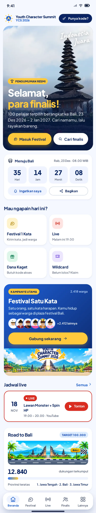
M01 Beranda (mobile)390 × 2060 · m01-beranda.html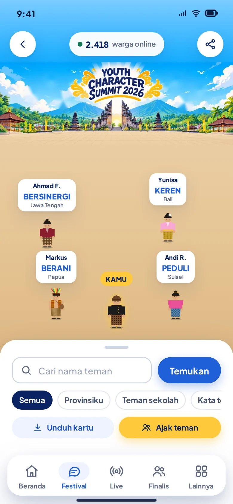
M02 Festival Satu Kata · plaza390 × 844 · m02-festival.html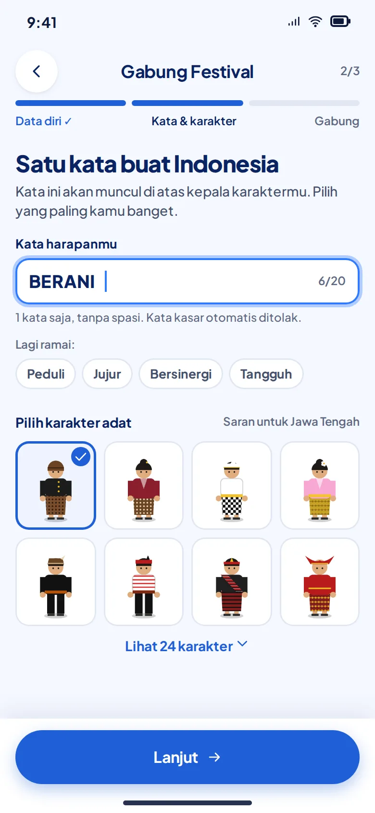
M03 Gabung Festival · langkah 2/3390 × 844 · m03-gabung.html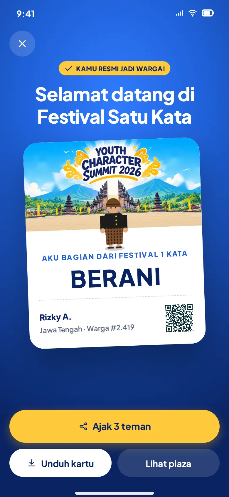
M04 Sukses gabung + kartu share390 × 844 · m04-kartu.html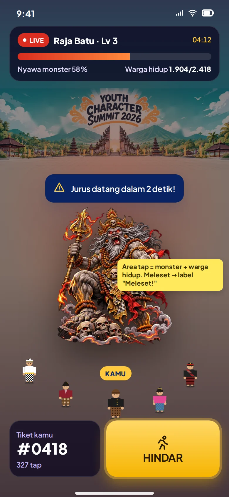
M05 Lawan Monster · saat jurus390 × 844 · m05-monster.html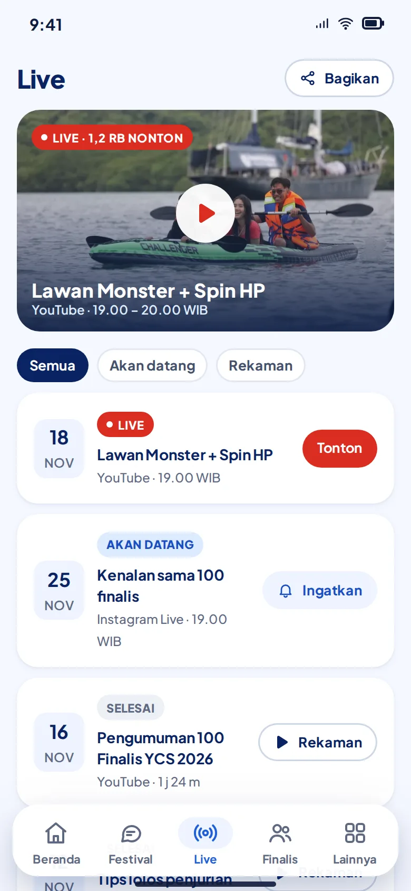
M06 Live & jadwal390 × 844 · m06-live.html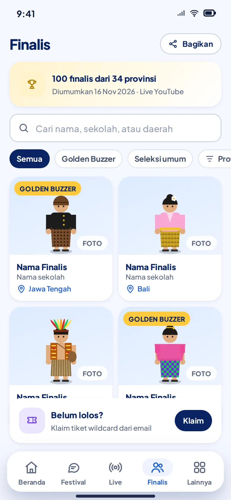
M07 Finalis390 × 844 · m07-finalis.html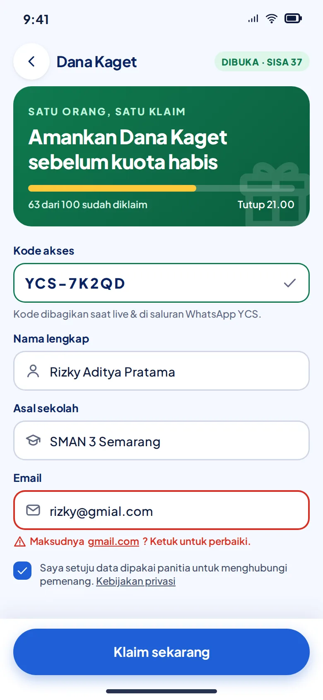
M08 Dana Kaget · form + validasi390 × 844 · m08-dana-kaget.html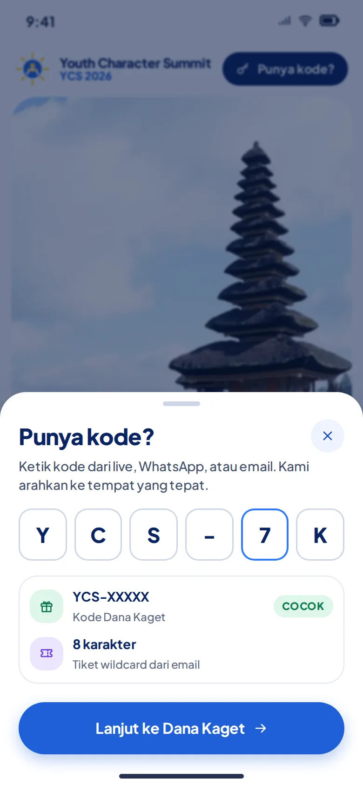
M09 Punya kode? · bottom sheet390 × 844 · m09-punya-kode.html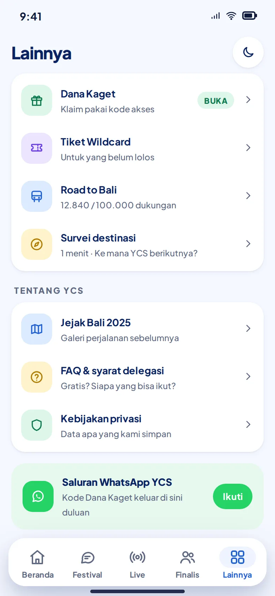
M10 Lainnya (menu)390 × 844 · m10-lainnya.html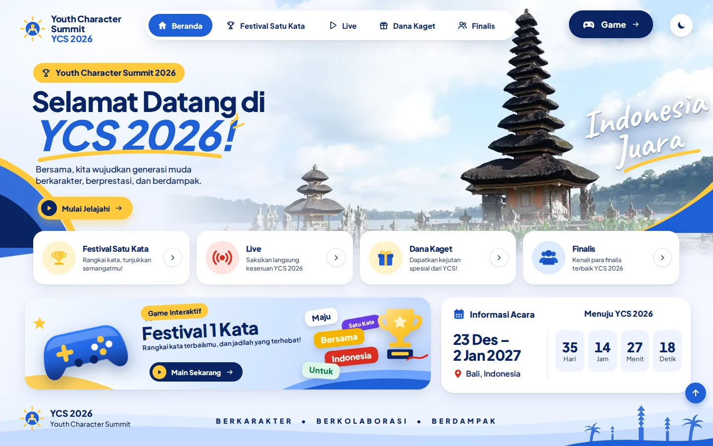
D01 Beranda (desktop)1440 × 1666 · d01-beranda.html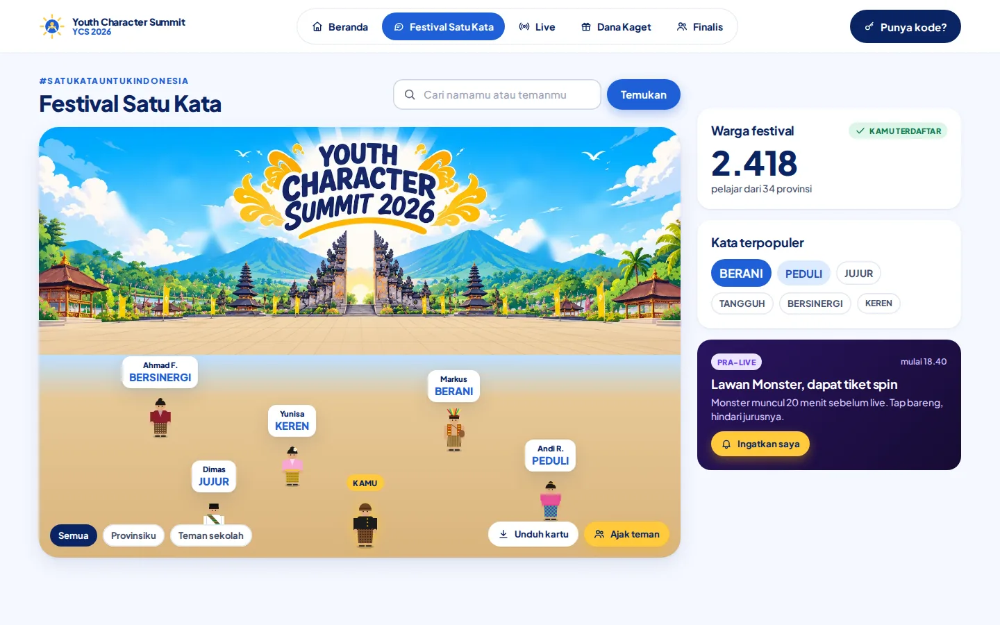
D02 Festival Satu Kata (desktop)1440 × 900 · d02-festival.html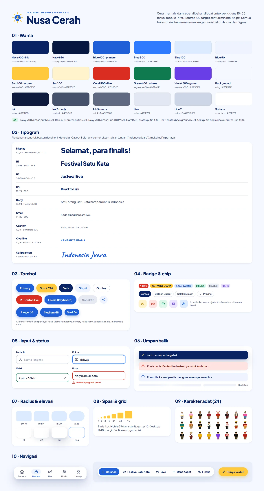
DS Design System · Nusa Cerah1440 × 2680 · ds-design-system.html